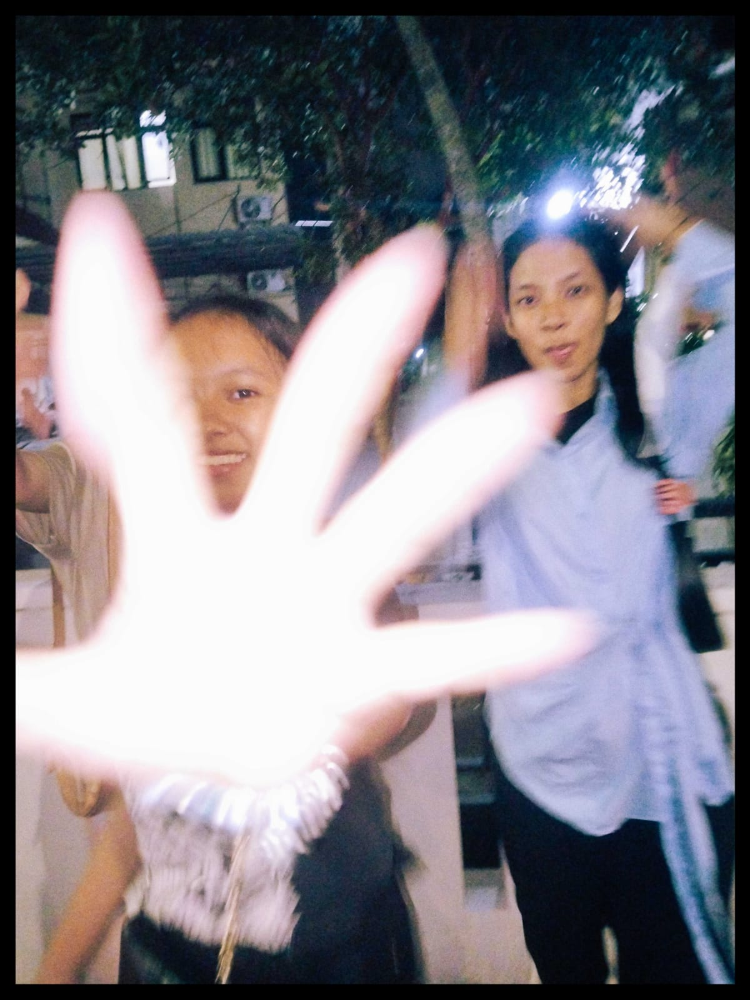
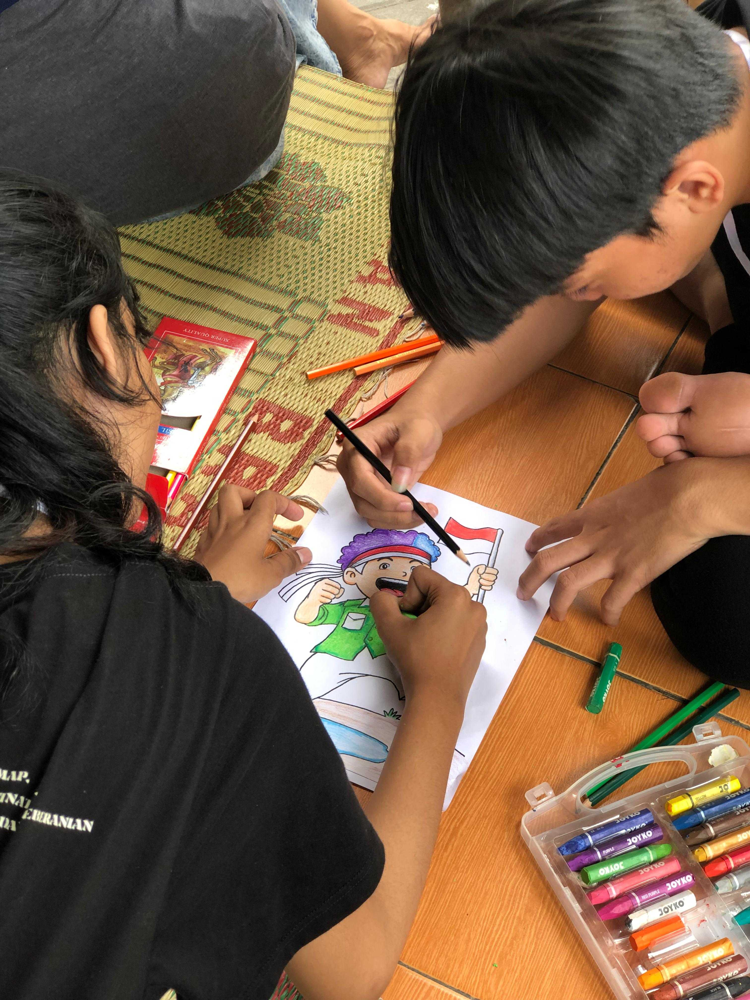
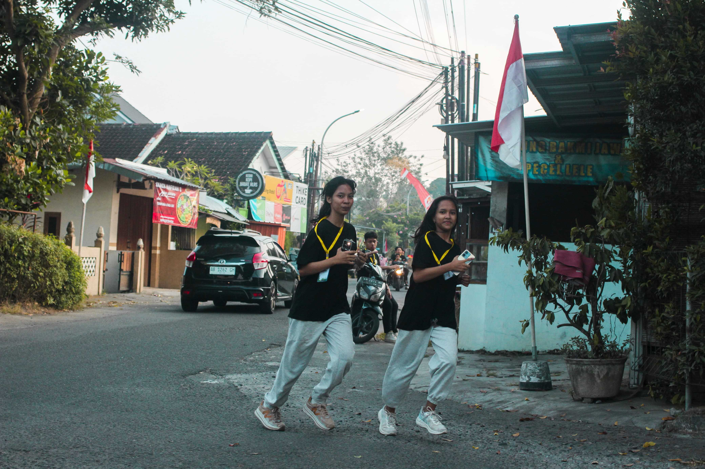
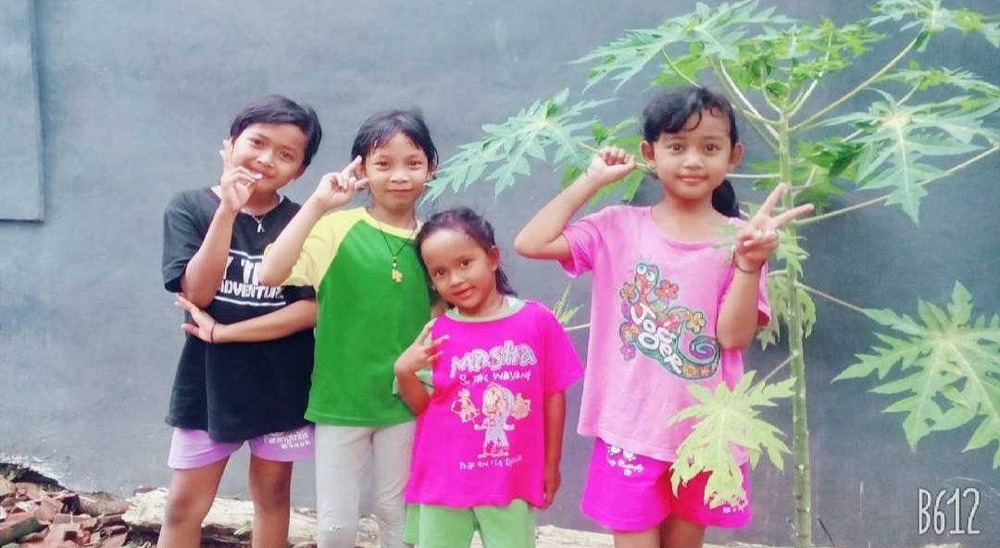

Little Moments ♡
Little pieces of my world
Kumpulan momen sederhana yang menyimpan banyak cerita,
tawa, dan kenangan manis yang ingin selalu kuingat.

01. Side by Side ♡
Momen yearbook bersama seseorang yang membuat
kenangan ini lebih berkesan.
|

02. Silly Little Us
Selfie dengan ekspresi kocak yang bikin
momen sederhana jadi lebih seru.
|

03. After Syawalan
Momen setelah syawalan yang penuh
kebersamaan dan kenangan manis.
|
|

04. Little Art Club
Kreativitas kecil yang membuat
hari terasa lebih berwarna.
|
.jpg)
05. Just for Fun
Menikmati momen tanpa alasan,
hanya untuk bersenang-senang.
|
|

06. Oops, Candid!
Foto spontan yang justru menyimpan
cerita paling seru.
|

07. A Meaningful Day
Hari yang bermakna, dipenuhi doa,
pembelajaran, dan kebersamaan.
|

08. Mirror Diaries
Foto sederhana yang menyimpan kenangan
manis selama study tour ke Bali. ♡
|

09. Little Joys, Big Memories
Kebahagiaan kecil yang menjadi
kenangan besar untuk dikenang.
|

10. Back to Little Days
Mengenang masa kecil yang penuh
cerita dan kebahagiaan.
|
|
|
♡ Every Picture Has a Story ♡
Setiap foto menyimpan cerita,
setiap cerita menjadi kenangan,
dan setiap kenangan punya tempat
tersendiri di hati.
|
Made with love & little joys ♡
© 2026 | Snowyna's Space
|
|